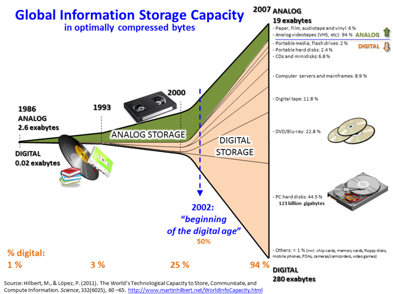

global information storage capacity
links
Now-a-days, the amount of digital information is increasing at a high speed, due to the
developments in digital processors and digital storage systems. in the diagram of world’s global
information storage capacity we can see evolution from 1986 to 2007. Therefore, new fields of study have been
developed for processing large datasets, known as Big Data. Big data refers to datasets whose size is beyond
the ability of typical database software tools to capture, store, manage, and analyze and new architecture,
Techniques, algorithms, and analytics are required to manage and extract hidden knowledge from it.
